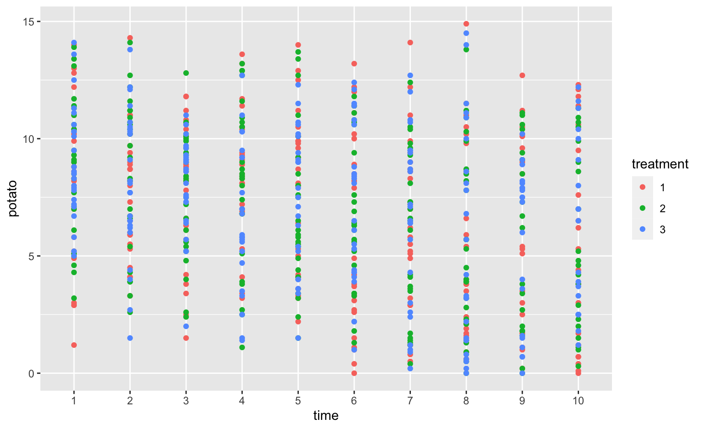
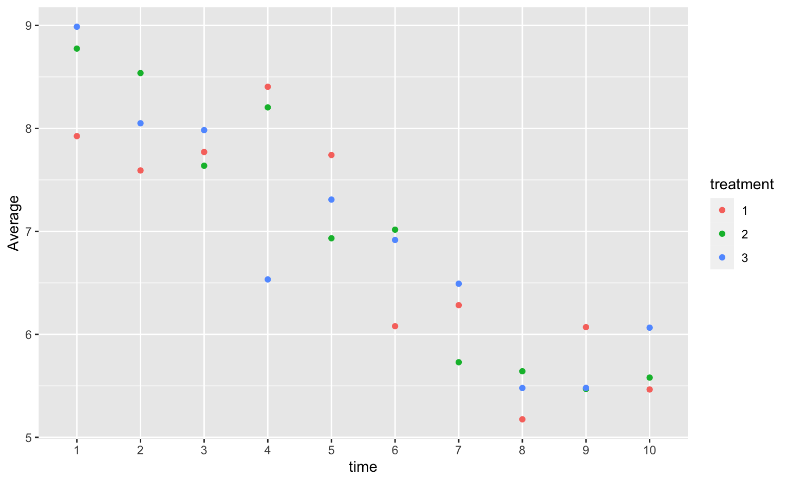
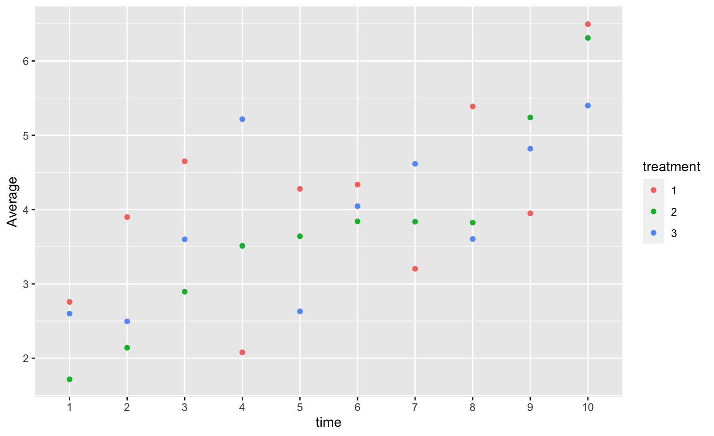

Did the french fries taste worse over time? (3)
avgs %>% ggplot(aes(x = time)) +
geom_point(aes(y = m.potato)) +
geom_point(shape=2, aes(y=m.rancid)) +
ylab("Average")
Yumou Qiu
avgs %>% ggplot(aes(x = time)) +
geom_point(aes(y = m.potato)) +
geom_point(shape=2, aes(y=m.rancid)) +
ylab("Average")

For this your turn use the
french_fries data from the reshape2 package:
data(french_fries, package="reshape2")
avgs.time.trt <- french_fries %>% group_by(time, treatment) %>% summarise(
m.potato = mean(potato, na.rm=TRUE),
m.buttery = mean(buttery, na.rm=TRUE),
m.grassy = mean(grassy, na.rm=TRUE),
m.rancid = mean(rancid, na.rm=TRUE),
m.painty = mean(painty, na.rm=TRUE)
)## `summarise()` has grouped output by 'time'. You can override using the
## `.groups` argument.french_fries %>% ggplot(aes(x = time, y = potato)) +
geom_point(aes(color = treatment))## Warning: Removed 1 rows containing missing values (`geom_point()`).
avgs.time.trt %>% ggplot(aes(x = time, y = m.potato)) +
geom_point(aes(color = treatment)) +
ylab("Average")
avgs.time.trt %>% ggplot(aes(x = time, y = m.rancid)) +
geom_point(aes(color = treatment)) +
ylab("Average")